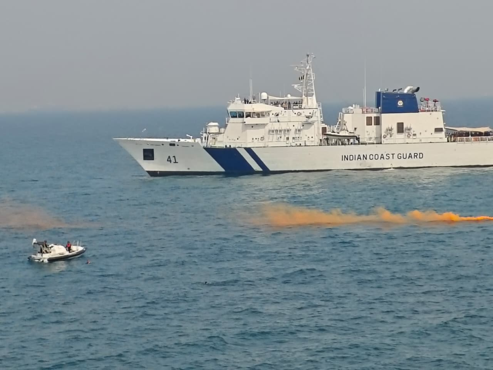

The Fourth Service
The Indian Coast Guard: Sentinels of the Shore

India is not only a land of mountains and plains; it is a maritime nation, with a coastline stretching some seven and a half thousand kilometres and a vast ocean of interests beyond it. Guarding that watery frontier — quietly, constantly, and often heroically — is the Indian Coast Guard, the nation's fourth armed force.
My poem The Silent Depths honours those who serve at sea. The Coast Guard is part of that same brotherhood of the waters.
A force born of need
The Indian Coast Guard was formally established in 1978, after it became clear that the navy could not, on its own, police the enormous and growing demands of India's maritime zone — smuggling, illegal fishing, search and rescue, and the protection of offshore assets.[1] A dedicated force was needed for the everyday guardianship of the seas, leaving the navy free for war-fighting.
Its motto, "Vayam Rakshamah" — "We Protect" — captures its character. The Coast Guard is, above all, a protective force: of lives, of laws, and of the coastline itself.
Their resolve flows as the tides endure, bound to a nation, steadfast and pure.
Guardians of life at sea
Much of the Coast Guard's work is invisible to the public until disaster strikes. Its ships and aircraft conduct search and rescue across millions of square kilometres of ocean — pulling fishermen from sinking boats, evacuating the injured, and racing into cyclones when others are racing out.[1] Every year, the force saves hundreds of lives at sea.
It also fights the unglamorous but vital battles of maritime law enforcement: intercepting smugglers and traffickers, curbing illegal fishing, responding to oil spills, and protecting the marine environment. This is the daily, grinding guardianship on which a coastal nation depends.
The first line of coastal defence
The terrible lessons of the 26/11 Mumbai attacks — when terrorists came to the city by sea — transformed India's approach to coastal security. The Coast Guard's role expanded sharply, with new vessels, aircraft, coastal radar networks and a far tighter coordination with the navy, marine police and intelligence agencies.[1]
Today the Coast Guard is the crucial middle layer of India's maritime shield: between the marine police close to shore and the navy far out at sea, it watches the approaches, checks suspicious vessels, and stands as an early warning against threats from the water.
A growing fleet for a growing nation
As India's economy and maritime interests grow — its ports, its offshore energy, its "blue economy" — so does the Coast Guard. Its fleet of patrol vessels, interceptor boats and aircraft has expanded steadily, much of it built in Indian shipyards as part of the drive for self-reliant defence.[2]
From a handful of ships to a major force
The Coast Guard began modestly, with a small fleet and a big mandate. Over the decades it has grown into one of the largest coast guards in the world, operating a fleet of offshore and inshore patrol vessels, fast interceptor boats, hovercraft, and a dedicated air wing of fixed-wing aircraft and helicopters.[1]
Much of this fleet is now built in Indian shipyards, tying the Coast Guard's expansion to the wider push for self-reliant defence. Its reach extends across the country's vast Exclusive Economic Zone — millions of square kilometres of ocean in which India holds rights to the resources of the sea and the seabed, and which someone must actually patrol for those rights to mean anything.
The wall at sea after 26/11
The most profound change in the Coast Guard's role came after the 26/11 Mumbai attacks of 2008, when ten terrorists reached the heart of the city by sea, exposing a gaping hole in India's coastal security.[1] The response was a complete overhaul of how the coast is watched.

The Coast Guard was designated the agency responsible for coastal security in territorial waters, and a layered system was built: a chain of coastal surveillance radars dotting the shoreline, joint operations centres linking the navy, Coast Guard and marine police, and tighter registration and tracking of the countless fishing boats that crowd Indian waters. The aim is simple and vital — that no hostile vessel should ever again slip unnoticed toward an Indian city.
Humanitarian first responders
For all its security duties, the Coast Guard is, to most Indians who have encountered it, a rescuer first. When cyclones tear up the Bay of Bengal and the Arabian Sea, its ships and aircraft are among the first to move — evacuating oil rigs, plucking stranded sailors from the water, and ferrying relief to cut-off coastal communities.[2]
It is also the nation's principal shield against pollution at sea, leading the response to oil spills that threaten India's beaches and fisheries. In this role the Coast Guard protects not just lives but livelihoods — the coastal economy on which millions of fishing families depend.
The charter: where its authority comes from
The Coast Guard is not simply a smaller navy; it is a distinct service with its own legal charter. Raised under an Act of Parliament, it was given clear statutory duties — the protection of India's maritime zones and offshore installations, the safety of life and property at sea, the preservation of the marine environment, and the enforcement of the nation's maritime laws.[1] It operates in the band of ocean between the marine police, who patrol close to shore, and the navy, which prepares for war on the high seas.
That charter matters because India's stake in the sea is vast. The country's Exclusive Economic Zone — the waters in which it holds sovereign rights over fish, oil, gas and minerals — covers more than two million square kilometres. Rights on paper mean nothing without the ships and aircraft to assert them, and it is the Coast Guard that turns the map's blue boundaries into a living, patrolled frontier.
Guarding the Indian Ocean's lifelines
India sits astride some of the busiest and most strategically vital sea lanes on earth. A huge share of the world's trade and energy passes through the Indian Ocean, and the bulk of India's own commerce — and almost all of its oil imports — travels by sea.[2] Keeping these arteries safe is a national-security task in its own right.
Here the Coast Guard's work shades into the wider contest for a secure Indian Ocean: deterring piracy, intercepting the drug shipments that increasingly move by sea, checking illegal and unregulated fishing by foreign vessels, and cooperating with the navies and coast guards of friendly nations. In an age when much of the competition between powers plays out on the water, the everyday vigilance of the Coast Guard is part of how India keeps its maritime neighbourhood stable.
The people behind the ensign
Behind every vessel and aircraft are the men and women who crew them. The Coast Guard draws and trains its own officers and personnel, increasingly including women in operational roles, instilling a culture that blends naval discipline with the improvisational grit of a rescue service.[1] A Coast Guard sailor may spend one week boarding a suspect vessel in heavy seas and the next plucking shipwrecked fishermen from the water in a cyclone.
It is a demanding ethos, and a quietly heroic one. There are no grand parades for the crew that spends a freezing night searching a black ocean for a capsized boat. Their reward is measured in the people who make it home because of them — a kind of service that asks for everything and advertises nothing, which is exactly the kind my book was written to honour.
The unseen watch on the water
We tend to picture the nation's defenders on snowy ridges or in fighter cockpits. But there is a whole service that keeps its watch on the heaving, indifferent sea — in storms and darkness, far from any cheering crowd, so that a fisherman comes home, a smuggler is stopped, or a threat is turned back before it reaches our shores.
The Coast Guard rarely makes headlines, and that is precisely the point: its success is measured in disasters averted and lives quietly saved. It is, in the truest sense, one of the unsung breaths of the nation's heroes — sentinels of the shore, keeping their endless, vigilant watch over the waters that surround us all.
Sources & further reading
- "Indian Coast Guard," Wikipedia.
- Press Information Bureau (PIB), Government of India — pib.gov.in.
All images via Wikimedia Commons, used under the licences shown in each caption.